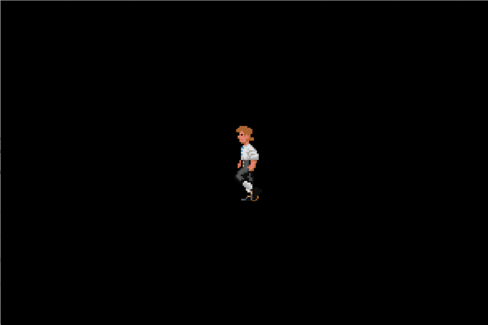

Getting Started
Download the Source Code
First, make sure you've installed Git as that's
what we'll be using to retrieve the source code. The following command will
download Rainbow and all of its submodules into a folder named rainbow:
git clone --recursive https://bitbucket.org/tido/rainbow.git
If you're using a graphical UI for Git, make sure to checkout the submodules as well.
Building for Windows
Install Visual Studio Community.
Install CMake.
Optional: Download FMOD Studio API, and extract it. Copy the headers into
lib/FMOD/inc/, and binaries intolib/FMOD/lib/windows/. You should end up with the following:rainbow/lib/FMOD ├── inc │ ├── fmod.h │ ├── fmod.hpp │ ├── fmod_codec.h │ ├── fmod_common.h │ ├── fmod_dsp.h │ ├── fmod_dsp_effects.h │ ├── fmod_errors.h │ ├── fmod_output.h │ ├── fmod_studio.h │ ├── fmod_studio.hpp │ └── fmod_studio_common.h └── lib └── windows ├── fmod.dll ├── fmod_vc.lib ├── fmod64.dll ├── fmod64_vc.lib ├── fmodstudio.dll ├── fmodstudio_vc.lib ├── fmodstudio64.dll └── fmodstudio64_vc.libThe PowerShell script
tools\make.ps1will walk you through customising your Rainbow project. Find it using File Explorer, right-click the file, and select Run with PowerShell. You can dismiss any prompts about execution policy.When Visual Studio opens the project, simply hit
F5to build and run.
Building for macOS
Install Xcode from App Store.
Once Xcode is installed, launch it once to install Command Line Tools.
Install Homebrew.
Install build dependencies from the root of the repo:
brew bundleOptional: Download FMOD Studio API, extract it, and point
tools/fmod-import-tool.shat the directory you extracted it to. This should copy all the necessary files into thelibfolder.Make a directory for building Rainbow, then run the build script:
mkdir rainbow-build cd rainbow-build /path/to/rainbow/tools/build.sh -DCMAKE_BUILD_TYPE=<configuration> [option ...]Start the playground:
./rainbow /path/to/rainbow/js
You'll find an overview of configuration and feature flags further below.
Building for Linux
Use your distro's package manager to install the dependencies:
Arch Linux pacman -S --needed cmake gcc mesa ninja pulseaudio sdl2Debian/Ubuntu apt install build-essential cmake libgl1-mesa-dev libpulse-dev libsdl2-dev ninja pkg-config pulseaudioOptional: Download FMOD Studio API, extract it, and point
tools/fmod-import-tool.shat the directory you extracted it to. This should copy all the necessary files into thelibfolder.Make a directory for building Rainbow, then run the build script:
mkdir rainbow-build cd rainbow-build /path/to/rainbow/tools/build.sh -DCMAKE_BUILD_TYPE=<configuration> [option ...]Start the playground:
./rainbow /path/to/rainbow/js
You'll find an overview of configuration and feature flags further below.
Building for Android
- Install Android Studio.
- Install CMake.
- Optional: Download FMOD Studio API, extract it, and point
tools/fmod-import-tool.shat the directory you extracted it to. This should copy all the necessary files into thelibfolder. - Open
build/android/in Android Studio. - Run the app on your device or emulator.
Building for iOS
- Install Xcode from the App Store.
- Open
build/ios/Rainbow.xcodeprojin Xcode. - Build and run the current scheme.
Build Configuration
Available features and build configurations:
| Build configuration | Description |
|---|---|
Debug |
Compiles Rainbow in debug mode with little or no optimizations. |
Release |
Compiles Rainbow in release mode with most optimizations turned on. |
RelWithDebInfo |
Similar to Release but with debugging symbols. |
MinSizeRel |
Similar to Release with emphasis on small binary size. |
| Feature flag | Description |
|---|---|
UNIT_TESTS |
Compiles unit tests. Only useful for engine developers. |
USE_FMOD_STUDIO |
Replaces Rainbow's custom audio engine with FMOD Studio. |
USE_HEIMDALL |
Compiles in Rainbow's debug overlay and other debugging facilities. |
USE_PHYSICS |
Compiles in Box2D. |
USE_SPINE |
Enables support for loading Spine rigs. |
Example: Build Rainbow with physics and Spine support for game development.
/path/to/rainbow/tools/build.sh -DCMAKE_BUILD_TYPE=Debug \
-DUSE_HEIMDALL=1 \
-DUSE_PHYSICS=1 \
-DUSE_SPINE=1
You can pass any number of CMake options.
Specifying Compiler
By default, GCC and Clang will be used to compile both C and C++ code on Linux and macOS respectively. Unix Makefiles is the default generator on Linux, and Xcode on macOS. You can change these by prefixing environment variables. For instance, to use GCC and Ninja in place of Clang and Makefiles:
CC=gcc CXX=g++ GENERATOR=Ninja /path/to/rainbow/tools/build.sh [option ...]
If you have problems running build.sh, make sure it has execution permission:
chmod +x /path/to/rainbow/tools/build.sh
Basics
File Structure
- config.json
- index.js
config.json (optional)
The configuration file is just a JSON. It enables/disables features, and sets the window size (Linux/macOS/Windows).
{
"$schema": "./rainbow-config.schema.json",
"accelerometer": true,
"allowHighDPI": false,
"msaa": 0,
"resolution": {
"width": 1280,
"height": 720
},
"suspendOnFocusLost": true
}
Entry Point
// Any class that derives from `GameBase` is a potential entry point. The class
// may also override any or none of the methods `init_impl()` and
// `update_impl()`. Although, not overriding any of them will display nothing.
class MyGame final : public rainbow::GameBase
{
public:
MyGame(rainbow::Director& director) : rainbow::GameBase(director) {}
private:
rainbow::spritebatch_t batch_;
void init_impl(const Vec2i &screen) override;
void update_impl(unsigned long dt) override;
};
// The engine will call `init_impl()` once on startup, after a graphics context
// has been created. From then on, `update_impl()` will be called every frame.
// `dt` is the time passed since last frame, in milliseconds.
//
// Finally, let Rainbow know which class to use by implementing
// `GameBase::create()`:
auto rainbow::GameBase::create(rainbow::Director& director)
-> std::unique_ptr<rainbow::GameBase>
{
return std::make_unique<MyGame>(director);
}
// See `Script/NoGame.cpp` and `Script/NoGame.h` for a complete example. We will
// add sprites to the screen in the following sections.
// 'index.js' must implement the following two entry-point functions:
function init(width, height) {
// Called once on startup.
}
function update(dt) {
// Called every frame. |dt| is the time since last frame in milliseconds.
}
// There is no draw function. Later, we'll use the render queue to get things
// onto the screen.
Sprite Batches
One of Rainbow's philosophies is to always batch sprites. So in order to create a sprite, one must first create a batch.
void MyGame::init_impl(const Vec2i& screen)
{
constexpr unsigned int count = 2; // Intended number of sprites in batch
batch_ = rainbow::spritebatch(count);
function init(screenWidth, screenHeight) {
const count = 2; // Intended number of sprites in batch
const batch = new Rainbow.SpriteBatch(count);
The count tells Rainbow that we intend to create a batch of two sprites. Next,
we'll create two sprites:
auto sprite1 = batch_->create_sprite(100, 100);
auto sprite2 = batch_->create_sprite(100, 100);
const sprite1 = batch.createSprite(100, 100);
const sprite2 = batch.createSprite(100, 100);
The order in which sprites are created are important as it determines the draw
order. Here, sprite1 is drawn first, followed by sprite2.
Now we have a sprite batch containing two untextured sprites. Let's add a texture:
// Load the texture atlas.
auto atlas = rainbow::texture("canvas.png");
batch_->set_texture(atlas);
// Create a texture from the atlas, and assign to our sprites.
auto texture = atlas->create(Vec2i{448, 108}, 100, 100);
sprite1->set_texture(texture);
sprite2->set_texture(texture);
// Load the texture atlas.
const atlas = new Rainbow.Texture("canvas.png");
batch.setTexture(atlas);
// Create a texture from the atlas, and assign to our sprites.
const texture = atlas.addRegion(448, 108, 100, 100);
sprite1.setTexture(texture);
sprite2.setTexture(texture);
First, we load the actual texture. Textures are always loaded into atlases which can be assigned to sprite batches. "Actual" textures are created by defining a region. These, in turn, are assigned individual sprites. This makes the texture atlas and its textures reusable. Additionally, it enables skinning, i.e. changing the texture of every sprite in a batch by changing only the texture atlas. Rainbow does not prevent you from loading the same asset.
Please refer to the API reference for full details. For displaying text, look up
Label.
Render Queue
Anything that needs to be updated and/or drawn every frame, must be added to the render queue. The render queue determines the order in which objects are drawn.
Now we'll add the batches we've created earlier:
// Add batch to the render queue. Note that the render queue is only
// accessible from the entry point. If you need it elsewhere, you must pass
// along its pointer.
auto unit = render_queue().emplace_back(batch_);
// Position our sprites at the center of the screen.
const float cx = screen.x * 0.5f;
const float cy = screen.y * 0.5f;
sprite1->set_position(Vec2f{cx - 50, cy});
sprite2->set_position(Vec2f{cx + 50, cy});
}
// Add batch to the render queue.
const unit = Rainbow.RenderQueue.add(batch);
// Position our sprites at the center of the screen.
const cx = screenWidth * 0.5;
const cy = screenHeight * 0.5;
sprite1.setPosition({ x: cx - 50, y: cy });
sprite2.setPosition({ x: cx + 50, y: cy });
}
If you compile and run this code, you should see two identical sprites next to each other at the center of the screen.
As always, refer to the API reference for full details.
Scenes
Sometimes, dealing with the render queue can be confusing or frustrating if you can't fully visualise the order. However, you can define entire scenes with JSON. An empty scene looks something like:
{
"$schema": "./rainbow-scene.schema.json",
"assets": [
/* declare fonts, sounds or textures here */
],
"entities": [
/* declare animations, labels or sprites here */
]
}
We can recreate the earlier scene:
{
"$schema": "./rainbow-scene.schema.json",
"assets": [
{
"id": "atlas",
"path": "canvas.png",
"regions": [[448, 108, 100, 100]]
}
],
"entities": [
{
"id": "batch",
"texture": "atlas",
"sprites": [
{
"id": "sprite1",
"width": 100,
"height": 100,
"position": {
"x": 0,
"y": 0
},
"texture": 0
},
{
"id": "sprite2",
"width": 100,
"height": 100,
"position": {
"x": 0,
"y": 0
},
"texture": 0
}
]
}
]
}
If you save the file as my.scene.json, we can implement our new entry point:
void MyGame::init_impl(const Vec2i& screen)
{
scene_ = std::make_unique<rainbow::Scene>("my.scene.json");
render_queue().emplace_back(scene_);
// You can also access assets and resources through this object. We retrieve
// them by name:
// auto batch = scene_->get<SpriteBatch>("batch");
// auto sprite1 = scene_->get<SpriteRef>("sprite1");
}
function init(screenWidth, screenHeight) {
scene = new Rainbow.Scene("my.scene.json");
Rainbow.RenderQueue.add(scene, "myScene");
// Position our sprites at the center of the screen.
const cx = screenWidth * 0.5;
const cy = screenHeight * 0.5;
scene.sprite1.setPosition({ x: cx - 50, y: cy });
scene.sprite2.setPosition({ x: cx + 50, y: cy });
}
Audio
Audio consists mainly of the sound object and the audio channel. The sound object is basically an audio buffer. It can be wholly loaded, or it can stream from disk. A sound object is played on an audio channel. An audio channel can only play one sound object at a time but the sound object can be used by any number of channels. As raw audio data can take a large amount of memory, it is recommended to only create static sound objects for short audio files (such as sound effects).
Supported Audio Codecs
| OS | AAC | ALAC | HE-AAC | MP3 | Ogg |
|---|---|---|---|---|---|
| Windows | ✓ | ||||
| macOS | ✓ | ✓ | ✓ | ✓ | ✓ |
| Linux | ✓ | ||||
| Android | ✓ | ||||
| iOS | ✓ | ✓ | ✓ | ✓ |
This table is not exhaustive. Your target devices may support more decoders than listed here. Please check the appropriate documentations.
Resource Management
Sound* rainbow::audio::load_sound (const char* path);
Sound* rainbow::audio::load_stream (const char* path);
void rainbow::audio::release (Sound*);
function Rainbow.Audio.loadSound(path: string): Sound;
function Rainbow.Audio.loadStream(path: string): Sound;
function Rainbow.Audio.release(sound: Sound): undefined;
Loads the audio file at given path, and returns a handle for a Sound resource
if successful. Otherwise, a nullptr is returned. load_sound will load the
whole file into memory, while load_stream will only open the file and stream
the data as the file is played.
To release an audio resource, call release with the handle.
Playback
bool rainbow::audio::is_paused (Channel*);
bool rainbow::audio::is_playing (Channel*);
void rainbow::audio::pause (Channel*);
Channel* rainbow::audio::play (Channel*);
Channel* rainbow::audio::play (Sound*, Vec2f world_position = Vec2f::Zero);
void rainbow::audio::stop (Channel*);
function Rainbow.Audio.isPaused(channel: Channel): boolean;
function Rainbow.Audio.isPlaying(channel: Channel): boolean;
function Rainbow.Audio.pause(channel: Channel): void;
function Rainbow.Audio.play(audial: Channel | Sound): Channel;
function Rainbow.Audio.stop(channel: Channel): void;
Once a Sound resource is obtained, it can be played by calling play. This,
in turn, will return a Channel handle that can be used to pause/resume/stop
the playback. The handle cannot be used to restart playback if it's stopped.
Once playback stops, the handle becomes invalid, and is returned to the pool
to be reused by subsequent calls to play(Sound*, ...).
Configuration
void rainbow::audio::set_loop_count (Channel*, int count);
void rainbow::audio::set_volume (Channel*, float volume);
void rainbow::audio::set_world_position (Channel*, Vec2f position);
function Rainbow.Audio.setLoopCount(channel: Channel, count: number): void;
function Rainbow.Audio.setVolume(channel: Channel, volume: number): void;
function Rainbow.Audio.setWorldPosition(channel: Channel, position: { x: number, y: number }): void;
A currently playing channel can be further configured. Currently, you can set the number of times it should loop, its volume, and world position.
Caveats and Known Limitations
Audio channel handles are reused. This implies that an old handle may be used to manipulate a more recent playback.
Input
The input manager listens to hardware input triggered by a user and fires the appropriate events to all subscribed listeners. Such events may include key presses, mouse clicks and movements, and controller button presses.
Classes must inherit InputListener to be eligible for input event
subscription. Additionally, one or more event delegates may optionally be
implemented. These will be detailed later.
Input listeners are chained together and receive events in order of
subscription. Delegates may return true if an event shouldn't travel further
down the chain. By default, false is returned so that events reach all
subscribers.
Note that we do not differentiate mouse and touch events. Both are considered pointer events.
Input Management (C++ only)
The input manager is only accessible from the entry point but you can store a pointer and pass it around. The pointer is guaranteed to be valid throughout the lifetime of your main class.
void MyGame::init_impl(const Vec2i&)
{
Input* input_manager = &input();
[…]
}
local input = rainbow.input
Subscribing
void Input::subscribe (InputListener& listener);
void Input::unsubscribe (InputListener& listener);
Subscribes/unsubscribes listener to input events. A listener will always be
added to the end of the chain, regardless if it was previously subscribed. A
deleted listener will automatically unsubscribe itself.
Handling Key Events
Key events come in two flavours, one for when a key is pushed down and one for when it is released. Listeners may implement any of the following methods to receive key events.
bool InputListener::on_key_down_impl (const Key& key) override;
bool InputListener::on_key_up_impl (const Key& key) override;
The key value of the event is passed as argument and, if available, its
modifiers (e.g. Ctrl, Alt, or ⇧ Shift). The modifier property is a
bitmask so you easily can check for multiple states. For instance, to check
whether both Ctrl and ⇧ Shift is pressed, perform a bitwise OR of the two
buttons and check for equality:
if (key.modifier == (Key::Mods::Shift | Key::Mods::Ctrl))
LOGI("Ctrl+Shift is currently pressed");
Handling Mouse/Touch Events
Implement any of the following methods to receive mouse/touch events.
bool InputListener::on_pointer_began_impl (const ArrayView<Pointer>& pointers) override;
bool InputListener::on_pointer_canceled_impl () override;
bool InputListener::on_pointer_ended_impl (const ArrayView<Pointer>& pointers) override;
bool InputListener::on_pointer_moved_impl (const ArrayView<Pointer>& pointers) override;
A Pointer instance stores the location of the event, x and y, and the
timestamp, timestamp, at which the event occurred. Its hash value uniquely
identifies a touch, or mouse button, for the duration of it touching the screen,
or mouse button being held.
The coordinate space origin is at the lower left corner, same as world space.
Example
In this example, we implement keyboard and mouse delegates. We subscribe to
input events in init_impl(), and unsubscribe in the main class' destructor.
While this example is running, we type "rainbow" and click on the mouse at two
random places on the screen. Finally, we close the window using the keyboard
shortcut Ctrl+Q/⌘Q.
#include "Input/Pointer.h"
#include "Input/VirtualKey.h"
#include "Script/GameBase.h"
class InputHandler final : public rainbow::InputListener
{
private:
bool on_key_down_impl(const rainbow::KeyStroke& k) override
{
LOGI("Pressed a key: %c", rainbow::to_keycode(k.key));
return true;
}
bool on_pointer_began_impl(
const ArrayView<rainbow::Pointer>& pointers) override
{
for (auto&& p : pointers)
LOGI("Pressed mouse button %u at %i,%i", p.hash, p.x, p.y);
return true;
}
};
class InputExample final : public rainbow::GameBase
{
public:
InputExample(rainbow::Director& director) : rainbow::GameBase(director) {}
~InputExample()
{
// The following line is strictly unnecessary as |input_handler_| will
// automatically unsubscribe itself on destruction.
input().unsubscribe(input_handler_);
}
private:
InputHandler input_handler_;
void init_impl(const rainbow::Vec2i&) override
{
input().subscribe(input_handler_);
}
};
auto rainbow::GameBase::create(rainbow::Director& director)
-> std::unique_ptr<rainbow::GameBase>
{
return std::make_unique<InputExample>(director);
}
Output:
[1428763097479|INFO] Pressed a key: r
[1428763097523|INFO] Pressed a key: a
[1428763097574|INFO] Pressed a key: i
[1428763097624|INFO] Pressed a key: n
[1428763097691|INFO] Pressed a key: b
[1428763097757|INFO] Pressed a key: o
[1428763097874|INFO] Pressed a key: w
[1428763099291|INFO] Pressed mouse button 1 at 1730,978
[1428763100741|INFO] Pressed mouse button 1 at 872,686
[1428763101291|INFO] Pressed a key: 5
[1428763101461|INFO] Pressed a key: q
Sprite Sheet Animations
A sprite sheet animation is a frame-based animation (like traditional animation) where we take a sprite and change its texture at set interval.
Animation Management
Creating Sprite Sheet Animations
Animation(const SpriteRef &sprite,
std::unique_ptr<Frame[]> frames,
unsigned int fps,
int delay = 0);
Rainbow.Animation(sprite: Sprite, frames: number[], fps: number, delay: number);
frames is an array of texture ids that are played back in succession. In C++,
the array must be terminated with Animation::Frame::end(). The playback rate
is determined by frames per second, or fps.
By default, an animation always loops without any delays between each cycle.
Setting delay to anything greater than 0, will introduce delays, measured in
frames. For instance, setting fps to 30 and delay to 2, will make the
animation wait 66⅔ ms before playing the next cycle. A negative delay disables
looping.
Before an animation can be played, it must also be added to the render queue. Batches of animations can be created and assigned a sprite at a later point in time.
Starting and Stopping Animations
bool Animation::is_stopped () const;
void Animation::start ();
void Animation::stop ();
function start(): void;
function stop(): void;
An animation will always start from the beginning. There is no pause function because animations live in the render queue and can therefore be paused by disabling its render unit.
Navigating the Animation
unsigned int current_frame () const;
function currentFrame(): number;
Returns the currently displayed frame; Animation::Frame::end() (-1) if none.
unsigned int frame_rate () const;
function frameRate(): number;
Returns the frame rate in frames per second.
void Animation::jump_to (unsigned int frame);
function jumpTo(frame: number): void;
Jumps to the specified frame.
void Animation::rewind ();
function rewind(): void;
Rewinds the animation. Equivalent to jump_to(0).
Modifying the Animation Sequence
void Animation::set_delay (int delay);
function setDelay(delay: number): void;
Sets number of frames to delay before the animation loops. Negative numbers disable looping.
void Animation::set_frame_rate (unsigned int fps);
function setFrameRate(fps: number): void;
Sets the frame rate in frames per second.
void Animation::set_frames (std::unique_ptr<Frame[]> frames);
function setFrames(frames: number[]): void;
Sets new frames to be played.
const Frame* release ();
Releases ownership of animation frames and returns it.
Changing Sprite To Animate
SpriteRef sprite () const;
Returns the target sprite.
void Animation::set_sprite (const SpriteRef &sprite);
function setSprite(sprite: Sprite): void;
Sets the sprite to animate.
Animation Callback Events
There are three events that are fired during an animation's lifetime.
AnimationEvent::Startfires when a stopped animation is started.AnimationEvent::Endfires when an animation is stopped.AnimationEvent::Completefires immediately after an animation completes a single cycle, before the delay preceding the next.AnimationEvent::Framefires for each frame that does not triggerEndorCompleteevents.
You can subscribe to these events using:
void Animation::set_callback (Animation::Callback f);
// Where `Animation::Callback` is a callable whose signature is
// `void(Animation *animation, AnimationEvent event)`, and `animation` is the
// animation object that triggered `event`.
function setCallback(callback: (animation: Animation, event: AnimationEvent) => void): void;
// Example:
(animation, event) => {
switch (event) {
case Rainbow.AnimationEvent.Start:
console.log("> Animation has started");
break;
case Rainbow.AnimationEvent.End:
console.log("> Animation has ended");
break;
case Rainbow.AnimationEvent.Complete:
console.log("> Animation has completed");
break;
case Rainbow.AnimationEvent.Frame:
console.log("> Animation is displaying frame", animation.currentFrame());
break;
}
}
Example
In this example, we set up a walking animation.
#include "FileSystem/FileSystem.h"
#include "Graphics/Animation.h"
#include "Script/GameBase.h"
namespace
{
constexpr int kTextureRegions[]{
400, 724, 104, 149,
504, 724, 104, 149,
608, 724, 104, 149,
712, 724, 104, 149,
816, 724, 104, 149,
920, 724, 104, 149};
rainbow::Animation::Frame kAnimationFrames[]{
0, 1, 2, 3, 4, 5, rainbow::Animation::Frame::end()};
}
auto load_texture()
{
auto texture_path = rainbow::filesystem::relative("monkey.png");
auto texture = rainbow::make_shared<rainbow::TextureAtlas>(texture_path.c_str());
texture->set_regions(kTextureRegions);
return texture;
}
void animation_event_handler(rainbow::Animation*, rainbow::AnimationEvent e)
{
switch (e)
{
case rainbow::AnimationEvent::Start:
// Handle animation start here.
break;
case rainbow::AnimationEvent::End:
// Handle animation end here.
break;
case rainbow::AnimationEvent::Complete:
// Handle animation cycle complete here.
break;
case rainbow::AnimationEvent::Frame:
// Handle animation frame update here.
break;
}
}
class AnimationExample final : public rainbow::GameBase
{
public:
AnimationExample(rainbow::Director& director)
: rainbow::GameBase(director), batch_(1),
animation_(rainbow::SpriteRef{},
rainbow::Animation::Frames(kAnimationFrames),
6,
0)
{
}
~AnimationExample() { animation_.release(); }
private:
rainbow::SpriteBatch batch_;
rainbow::Animation animation_;
void init_impl(const rainbow::Vec2i& screen) override
{
rainbow::graphics::TextureManager::Get()->set_filter(
rainbow::graphics::TextureFilter::Nearest);
auto texture = load_texture();
batch_.set_texture(texture);
auto sprite = batch_.create_sprite(104, 149);
sprite->set_position(rainbow::Vec2f(screen.x * 0.5f, screen.y * 0.5f));
animation_.set_sprite(sprite);
animation_.set_callback(&animation_event_handler);
render_queue().emplace_back(batch_);
render_queue().emplace_back(animation_);
animation_.start();
}
};
auto rainbow::GameBase::create(rainbow::Director& director)
-> std::unique_ptr<rainbow::GameBase>
{
return std::make_unique<AnimationExample>(director);
}
/// <reference path="./index.d.ts" />
interface World {
screen: { width: number; height: number };
batch: Rainbow.SpriteBatch;
animation: Rainbow.Animation;
}
let world: World;
function init(width: number, height: number) {
const texture = new Rainbow.Texture("monkey.png");
const walkingFrames = [
texture.addRegion(400, 724, 104, 149);
texture.addRegion(504, 724, 104, 149);
texture.addRegion(608, 724, 104, 149);
texture.addRegion(712, 724, 104, 149);
texture.addRegion(816, 724, 104, 149);
texture.addRegion(920, 724, 104, 149);
];
const batch = new Rainbow.SpriteBatch(1);
batch.setTexture(texture);
const sprite = batch.createSprite(104, 149);
sprite.setPosition({ x: width * 0.5, y: height * 0.5 });
const animation = new Rainbow.Animation(sprite, walkingFrames, 6, 0);
animation.start();
Rainbow.RenderQueue.add(batch);
Rainbow.RenderQueue.add(animation);
world = {
screen: { width, height },
batch,
animation
};
}
function update(dt: number) {}
Output:

Caveats and Known Limitations
Currently, an animation object takes ownership of the frames array and will attempt to delete it on destruction.
Math (C++ only)
Small collection of common mathematical functions and convenient algorithms. All
of these functions are available under namespace rainbow unless otherwise
stated.
Power of 2
unsigned int ceil_pow2 (unsigned int i);
Rounds i up to the nearest power of 2.
unsigned int floor_pow2 (unsigned int i);
Rounds i down to the nearest power of 2.
bool is_pow2 (unsigned int i);
Returns whether integer i is a power of 2.
Trigonometry
template <typename T, typename = FloatingPoint<T>>
T degrees (T r);
template <typename T, typename = FloatingPoint<T>>
T radian (T d);
Converts values between degrees and radians.
Vec2
Vec2 is a two-dimensional vector template whose value type must be arithmetic.
There are currently three predefined Vec2 types in the global namespace.
using Vec2f = Vec2<float>;
using Vec2i = Vec2<int>;
using Vec2u = Vec2<unsigned>;
Constants
template <typename T>
const Vec2<T> Vec2<T>::Down;
Vector representing down; shorthand for Vec2<T>(0, -1).
template <typename T>
const Vec2<T> Vec2<T>::Left;
Vector representing left; shorthand for Vec2<T>(-1, 0).
template <typename T>
const Vec2<T> Vec2<T>::One;
One vector; shorthand for Vec2<T>(1, 1).
template <typename T>
const Vec2<T> Vec2<T>::Right;
Vector representing right; shorthand for Vec2<T>(1, 0).
template <typename T>
const Vec2<T> Vec2<T>::Up;
Vector representing up; shorthand for Vec2<T>(0, 1).
template <typename T>
const Vec2<T> Vec2<T>::Zero;
Zero vector; shorthand for Vec2<T>(0, 0).
Methods
float Vec2<T>::angle (const Vec2 &v) const;
Returns the angle (in radians) between two points.
float Vec2<T>::distance (const Vec2 &v) const;
Returns the distance between two points.
float Vec2<T>::distance_sq (const Vec2 &v) const;
Returns the distance between two points, squared. This method skips the square
root step performed in distance() and is therefore preferred unless you need
the exact distance.
bool Vec2<T>::is_zero() const;
Returns whether both vector components are zero.
Operators
Assuming v and w are instances of Vec2f, Rainbow implements the following
operators:
Vector Negation
Vec2f w = -v;
Equivalent to w = Vec2f(-v.x, -v.y).
Vector Sum
Vec2f u = v + w;
v += w;
Equivalent to u = Vec2f(v.x + w.x, v.y + w.y).
Vector Difference
Vec2f u = v - w;
v -= w;
Equivalent to u = Vec2f(v.x - w.x, v.y - w.y).
Dot Product
float f = v * w;
Equivalent to f = v.x * w.x + v.y * w.y.
Scalar Multiplication
Vec2f u = 2.0f * v;
v *= 2.0f;
Equivalent to u = Vec2f(2.0f * v.x, 2.0f * v.y).
Scalar Division
Vec2f u = v / 2.0f;
v /= 2.0f;
Equivalent to u = Vec2f(v.x / 2.0f, v.y / 2.0f).
Scalar Addition/Subtraction
Vec2f u = v + 5.0f;
Vec2f w = v - 5.0f;
Equivalent to u = Vec2f(v.x + 5.0f, v.y + 5.0f).
Comparison
bool equal = v == w;
Equivalent to v.x == w.x && v.y == w.y.
Miscellaneous
template <typename T, typename = FloatingPoint<T>>
bool are_equal (T a, T b);
Returns whether two floating point numbers are (almost) equal. Based on the
AlmostEqualRelative() implementation from a Random ASCII blog post.
template <typename T>
T clamp (T x, T min_val, T max_val);
Returns the restricted value of x clamped in the range [min_val, max_val].
float fast_invsqrt (float x);
Returns an approximation of 1/√x using the infamous constant 0x5f3759df.
bool is_almost_zero (float x);
Returns whether x is practically zero. A number is considered almost zero if
it's within 10 * ε. On some hardware, this is 0.0000011920929.
Timers (C++ only)
Timers perform delayed actions or repeat actions at set intervals.
Timer Management
Timers are managed by a global TimerManager. Any void returning callable can
be used to create a timer. Timers may safely be created and cleared by timer
callbacks. Additionally, timers may clear themselves on callback without causing
error.
To access the timer manager, use the static Get() method:
TimerManager* timer_manager = TimerManager::Get();
Creating and Clearing Timers
Timer* TimerManager::set_timer (Timer::Closure func,
const int interval,
const int repeat_count);
void TimerManager::clear_timer (Timer* t);
Timer::Closure is defined as a callable whose signature is void(). The
interval is the time, in milliseconds, to wait before the first call and
between any subsequent calls. A 0 interval will immediately set the timer in a
finished state. Calls are repeated repeat_count times, e.g. a repeat count
of 4 makes the timer perform an action 5 times. For infinity, use any negative
value. TimerManager::set_timer() returns a Timer object which can be used to
pause and resume the timer, as well as querying information.
Pausing and Resuming Timers
void Timer::pause ();
void Timer::resume ();
Pausing a timer will freeze it in its current state until it is resumed.
Timer Information
bool Timer::is_active () const;
Returns whether the timer is currently active. This method returns true while
the timer is running normally, and false when it is finished or has been
paused.
int Timer::elapsed () const;
Returns the elapsed time.
int Timer::interval () const;
Returns the timer's delay/interval in milliseconds.
int Timer::repeat_count () const;
Returns the number of times the action will be repeated. Note that this number excludes the first call.
Example
The following example creates four timers. Two that are performed 5 times (repeated 4 times) with an interval of 500 ms, and two that are performed after a 500 ms delay. We use a freestanding function, a functor, a lambda function, and a bound member function to create them. For simplicity's sake, we only clear the first repeated timer.
#include <functional>
#include "Script/GameBase.h"
#include "Script/Timer.h"
void action()
{
LOGI("A freestanding function was called.");
}
class RepeatableAction
{
public:
void action()
{
LOGI("A bound, repeated action was performed: %i time(s)", ++counter_);
}
void operator()()
{
LOGI("A repeated action was performed: %i time(s)", ++counter_);
}
private:
int counter_ = 0;
};
class TimerExample final : public rainbow::GameBase
{
public:
TimerExample(rainbow::Director& director)
: rainbow::GameBase(director), repeated_(nullptr) {}
private:
rainbow::Timer* repeated_;
RepeatableAction action_;
void init_impl(const rainbow::Vec2i&) override
{
// Create a delayed action using a function.
rainbow::TimerManager::Get()->set_timer(&action, 500, 0);
// Create a repeated action using a functor.
repeated_ =
rainbow::TimerManager::Get()->set_timer(RepeatableAction{}, 500, 4);
// Create a delayed action using a lambda function.
rainbow::TimerManager::Get()->set_timer(
[] { LOGI("A delayed action was performed."); }, 500, 0);
// Create a repeated action using a bound member function.
rainbow::TimerManager::Get()->set_timer(
std::bind(&RepeatableAction::action, action_), 500, 4);
}
void update_impl(uint64_t) override
{
if (repeated_ && !repeated_->is_active())
{
rainbow::TimerManager::Get()->clear_timer(repeated_);
repeated_ = nullptr;
LOGI("The repeated timer was cleared.");
}
}
};
auto rainbow::GameBase::create(rainbow::Director& director)
-> std::unique_ptr<rainbow::GameBase>
{
return std::make_unique<TimerExample>(director);
}
Output:
[1428273728390|INFO] A freestanding function was called.
[1428273728390|INFO] A repeated action was performed: 1 time(s)
[1428273728390|INFO] A delayed action was performed.
[1428273728390|INFO] A bound, repeated action was performed: 1 time(s)
[1428273728847|INFO] A repeated action was performed: 2 time(s)
[1428273728847|INFO] A bound, repeated action was performed: 2 time(s)
[1428273729352|INFO] A repeated action was performed: 3 time(s)
[1428273729352|INFO] A bound, repeated action was performed: 3 time(s)
[1428273729863|INFO] A repeated action was performed: 4 time(s)
[1428273729863|INFO] A bound, repeated action was performed: 4 time(s)
[1428273730380|INFO] A repeated action was performed: 5 time(s)
[1428273730380|INFO] A bound, repeated action was performed: 5 time(s)
[1428273730380|INFO] The repeated timer was cleared.
Caveats and Known Limitations
Timer handlers are reused. This implies that an old handler may be used to manipulate a more recent timer.
Transitions (C++ only)
Transitions provide a simple way to animate properties of a sprite such as opacity or position.
Functions
Rainbow implements a set of transitions for any objects that implement the appropriate methods. Duration is specified in milliseconds.
Definitions
Components must implement all listed methods for each requirement of a transition. Which definitions they must implement will be specified.
Colourable
A colourable component must implement methods for getting and setting colour.
Color Colourable::color () const;
void Colourable::set_color (Color);
Rotatable
A rotatable component must implement a method for rotating it relative to its current angle. The value passed is in radians.
void Rotatable::rotate (float);
Scalable
A scalable component must implement methods for getting and setting the component's current scale factors individually on each axis.
Vec2f Scalable::scale () const;
void Scalable::set_scale (Vec2f);
Translatable
A translatable component must implement a method for retrieving the component's current position, and one for moving it relatively to its current position.
Vec2f Translatable::position () const;
void Translatable::move (Vec2f);
Fade Transition
template <typename T>
rainbow::Timer* rainbow::fade (T component,
int opacity,
int duration,
TimingFunction timing)
template <typename T>
rainbow::Timer* rainbow::fade (T component,
float opacity,
int duration,
TimingFunction timing)
Useful for fading objects in/out, or for pulse-fading.
Valid opacity values are in the range of 0 to 255, inclusive, for the integer version, and 0.0 to 1.0 for the float version.
Components must be colourable.
Move Transition
template <typename T>
rainbow::Timer* rainbow::move (T component,
Vec2f destination,
int duration,
TimingFunction timing)
Animates component moving towards destination.
Components must be translatable.
Rotate Transition
template <typename T>
rainbow::Timer* rainbow::rotate (T component,
float angle,
int duration,
TimingFunction timing)
Animates component rotating towards angle radians.
Components must be rotatable.
Scale Transition
template <typename T>
rainbow::Timer* rainbow::scale (T component,
float factor,
int duration,
TimingFunction timing)
template <typename T>
rainbow::Timer* rainbow::scale (T component,
Vec2f factor,
int duration,
TimingFunction timing)
The first version scales the component uniformly on both axes. Use the second version when you want to specify the scale factor for each axis individually.
Components must be scalable.
Timing Functions
The following functions are available:
rainbow::timing::linearrainbow::timing::ease_in_backrainbow::timing::ease_in_bouncerainbow::timing::ease_in_cubicrainbow::timing::ease_in_exponentialrainbow::timing::ease_in_quadraticrainbow::timing::ease_in_quarticrainbow::timing::ease_in_quinticrainbow::timing::ease_in_sinerainbow::timing::ease_out_backrainbow::timing::ease_out_bouncerainbow::timing::ease_out_cubicrainbow::timing::ease_out_exponentialrainbow::timing::ease_out_quadraticrainbow::timing::ease_out_quarticrainbow::timing::ease_out_quinticrainbow::timing::ease_out_sinerainbow::timing::ease_in_out_backrainbow::timing::ease_in_out_bouncerainbow::timing::ease_in_out_cubicrainbow::timing::ease_in_out_exponentialrainbow::timing::ease_in_out_quadraticrainbow::timing::ease_in_out_quarticrainbow::timing::ease_in_out_quinticrainbow::timing::ease_in_out_sine
To see how each of these behave visually, see Easing Functions Cheat Sheet.
Example
#include "FileSystem/FileSystem.h"
#include "Script/GameBase.h"
#include "Script/Transition.h"
class TransitionExample final : public rainbow::GameBase
{
public:
TransitionExample(rainbow::Director &director) : rainbow::GameBase(director)
{
}
private:
rainbow::spritebatch_t batch_;
void init_impl(const rainbow::Vec2i &screen) override
{
batch_ = rainbow::spritebatch(1);
auto logo_path = rainbow::filesystem::relative("rainbow-logo.png");
auto texture = rainbow::texture(logo_path);
batch_->set_texture(texture);
auto logo = batch_->create_sprite(392, 710);
logo->set_color(rainbow::Color{0xffffff00});
logo->set_position(rainbow::Vec2f{screen.x * 0.5f, screen.y * 0.5f});
logo->set_scale(0.5);
logo->set_texture(texture->add_region(1, 1, 392, 710));
render_queue().emplace_back(batch_);
rainbow::fade(logo, 1.0f, 1500, rainbow::timing::linear);
}
};
auto rainbow::GameBase::create(rainbow::Director& director)
-> std::unique_ptr<rainbow::GameBase>
{
return std::make_unique<TransitionExample>(director);
}
Output (refresh if you missed the animation):
Caveats and Known Limitations
Transitions are based on timers and will therefore run regardless of the enabled
state of the component's render unit. The Timer object returned by the
transition function can be used to pause/resume the animation.
Coding Standard
For starters, please read through the C++ Core Guidelines. Some of its points may only be repeated here on this page for emphasis.
General Practices
- Don't use run-time type information.
- Don't use exceptions.
- Initialise variables in declaration, as close to the site of first use as possible, and in the most limiting scope possible.
- Avoid static and global variables unless they can be declared
constorconstexpr. Otherwise, use theGlobaltemplate for classes that should be globally accessible. - Avoid type casting. Use explicit casts like
static_castandreinterpret_castif you must. Old C-style cast is forbidden. - Use
constexprandconstwhenever you can. - Use macros sparingly. If you cannot avoid them, try to
#definethem just before usage site and#undefright after. - Use
0for integers,0.0for reals,nullptrfor pointers, and\0for chars. - Prefer
sizeof()on the instance itself rather than the type.
Interfaces
- Declare freestanding functions within the
rainbownamespace, or as static member functions. Global functions are not allowed. - Use
NotNullto indicate thatnullptris not valid. - Use
Ownerto indicate ownership when a smart pointer makes things unnecessarily more complex.- Assume that a naked pointer/reference is borrowed. Don't delete these yourself.
- Use
finalandoverridewhen overriding methods. - Declare derived classes
finalwhenever possible. - Avoid separating template method declaration and definition whenever possible. Some compilers fail to recognise the corresponding definitions for non-trivial templates when separated.
Namespaces
- Use unnamed namespaces in your
.cpps. - using-directives, e.g.
using namespace std;, is forbidden. - using-declarations, e.g.
using std::vector;, are allowed anywhere in.cpps, and inside classes, functions, methods, and namespaces in.hs.
Comments
Use XML documentation. It is supported by both Doxygen and Visual Studio's IntelliSense.
Logging
- Use
R_ASSERTfor assertions. - Use
LOGD/E/F/I/Wmacros for printing to the console with a timestamp and severity level (debug, error, fatal, info, and warning respectively). Note that only messages logged withLOGEwill be visible in release builds. - Use
R_ABORTto terminate with an error message.
Source Files
Headers
Filenames must end in .h, and should be self-contained. That means that you
should be able to simply include it without having to include or declare
anything else.
Header Guards
All header files must have #define guards. The format of the macro should be
the full path of the file starting from src/. E.g. the file
src/Common/impl/DataMap_Unix.h should have the following guard:
#ifndef COMMON_IMPL_DATAMAP_UNIX_H_
#define COMMON_IMPL_DATAMAP_UNIX_H_
…
#endif
Names and Order of Includes
- Corresponding header
- C/C++ library
- Third-party libraries
- Rainbow headers
Within each section, order the includes alphabetically. The paths to Rainbow's
header files must always be descendants of src/. Don't use relative paths, or
paths with . or ...
For example, see src/ThirdParty/Spine/spine-rainbow.cpp:
#include "ThirdParty/Spine/spine-rainbow.h"
#include <algorithm>
#include <spine/SkeletonJson.h>
#include <spine/extension.h>
#include "Common/DataMap.h"
#include "FileSystem/Path.h"
#include "Graphics/Renderer.h"
#include "Graphics/SpriteVertex.h"
#include "Graphics/TextureAtlas.h"
Forward Declarations
Use forward declarations whenever possible to avoid unnecessary #includes.
Classes
- Always initialise members in the constructor using an initialisation list.
- Use the
explicitkeyword for constructors callable with one argument. - Prefer composition over inheritance.
- Data members should be private. If access to them are needed, define accessors and mutators.
Declaration Order
Declare public members first, followed by protected, and finally private. Within each section, use the following order:
usings, enums, and inner classes/structs- Constants (static const data members)
- Static methods
- Data members (except static const data members)
- Constructors
- Destructor
- Accessors and mutators
- Methods
- Event handlers
- Operator overloads
- Overrides
Naming Conventions
- File names are PascalCased and suffixed
.cppor.hfor C++ files.- Corresponding test files are suffixed
.test.cc.
- Corresponding test files are suffixed
- Class names are PascalCased.
- Pure interfaces must have an
Iprefixed.
- Pure interfaces must have an
- Variable names are snake_cased.
- Member variables have a trailing underscore, e.g.
a_local_variable_. - Struct members don't have a trailing underscore.
- Member variables have a trailing underscore, e.g.
- Constant names are PascalCased and are prefixed with
k. - Function names are snake_cased.
- Member accessors are named after the backing variable without the trailing
underscore, e.g.
int status() const { return status_; }. - Member setters are named after the backing variable with
set_prefixed, e.g.void set_status(int status) { status_ = status; }.
- Member accessors are named after the backing variable without the trailing
underscore, e.g.
- Namespace names are snake_cased.
- Enumerator names are PascalCased.
- Macro names are all UPPER_CASE_AND_UNDERSCORES.
Formatting
Use the provided .clang-format configuration to format any written code. There
should be a ClangFormat plugin
for your favourite editor:
- Sublime Text: Clang Format
- Visual Studio: clang-format plugin
- Vim: vim-clang-format
- Xcode: ClangFormat-Xcode
Using Linters
You can tell CMake to run clang-tidy as part of the build process by passing
-DCMAKE_CXX_CLANG_TIDY=/path/to/clang-tidy as a parameter to the build script.
Other Guidelines
License
Copyright © 2010-present Bifrost Entertainment AS and Tommy Nguyen
Permission is hereby granted, free of charge, to any person obtaining a copy of this software and associated documentation files (the "Software"), to deal in the Software without restriction, including without limitation the rights to use, copy, modify, merge, publish, distribute, sublicense, and/or sell copies of the Software, and to permit persons to whom the Software is furnished to do so, subject to the following conditions:
The above copyright notice and this permission notice shall be included in all copies or substantial portions of the Software.
THE SOFTWARE IS PROVIDED "AS IS", WITHOUT WARRANTY OF ANY KIND, EXPRESS OR IMPLIED, INCLUDING BUT NOT LIMITED TO THE WARRANTIES OF MERCHANTABILITY, FITNESS FOR A PARTICULAR PURPOSE AND NONINFRINGEMENT. IN NO EVENT SHALL THE AUTHORS OR COPYRIGHT HOLDERS BE LIABLE FOR ANY CLAIM, DAMAGES OR OTHER LIABILITY, WHETHER IN AN ACTION OF CONTRACT, TORT OR OTHERWISE, ARISING FROM, OUT OF OR IN CONNECTION WITH THE SOFTWARE OR THE USE OR OTHER DEALINGS IN THE SOFTWARE.